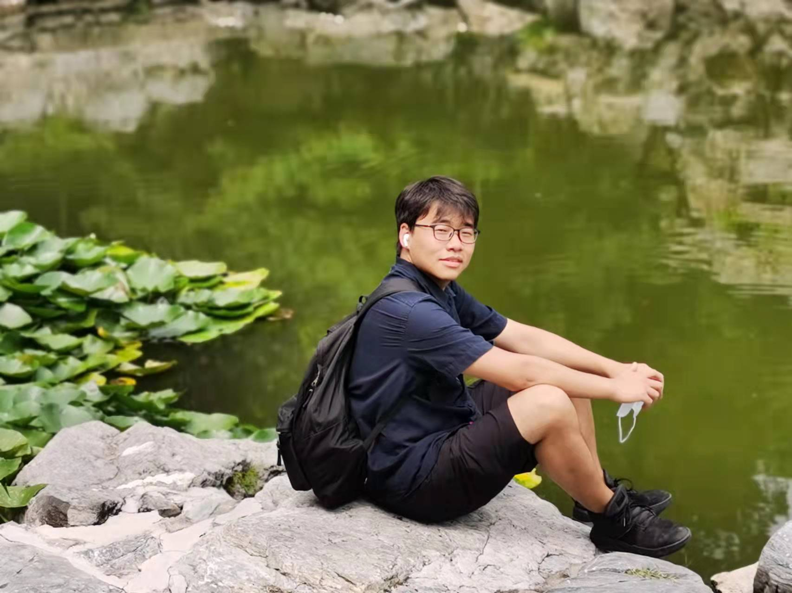

李寻欢
HUG Future倡议发起者兼第二届理事会主席，负责HUG Future组织的管理与发展。美国纽约州立大学布法罗分校地理学博士研究生，研究兴趣为能源转型与区域发展、能源正义和环境治理。

HUG Future理事会的组成成员共有5名，来自中国、美国、德国、荷兰等不同地区，研究兴趣包括人文地理学领域的各个方向。
HUG Future倡议发起者兼第二届理事会主席，负责HUG Future组织的管理与发展。美国纽约州立大学布法罗分校地理学博士研究生，研究兴趣为能源转型与区域发展、能源正义和环境治理。

HUG Future第二届理事会成员（技术支持组组长），负责HUG Future网站的日常更新与HUG Network学术网络的管理。德国慕尼黑大学地理系博士研究生，研究兴趣为气候/洪水/社区韧性、多主体建模、环境社会学、跨学科研究、气候投融资，长期支持和参与环保社团和ENGO活动。
HUG Future第二届理事会成员（媒体运营组组长），负责HUG Future微信公众号与B站新媒体运营。中山大学人文地理与城乡规划专业本科生，研究兴趣为文化地理（可持续生产与消费、城市消费空间）与旅游地理（日常环境与旅游体验、社区旅游与社区参与）。
HUG Future第二届理事会成员（媒体运营组组长），负责HUG Sci-comm科普专栏与LinkedIn的运营。瓦赫宁根大学森林与自然保护硕士研究生，研究兴趣为森林/生计/性别、知识生产与话语分析、原住民文化与社区保护实践。

陈天麒
布里斯托大学商学院博士研究生
研究兴趣为质性方法主导的流动性（平台流动性、流动性正义）、社会文化地理以及劳动地理研究。
丁子军
根特大学博士研究生
研究兴趣为社会与经济地理，交通网络与区域创新。

范文颖
中科院地理所博士研究生
研究兴趣为交通大数据分析、城市建模、跨城通勤行为、都市圈一体化。

韩颂
清华大学城乡规划系硕士研究生
研究兴趣为乡村人口迁入、乡村地理。
刘柯杉
鹿特丹伊拉斯姆斯大学硕士研究生毕业
研究兴趣为气候变化与可持续，城市空间结构演变。

李文斌
四川省社会科学院硕士研究生
研究兴趣为生态文明、民族经济、理论经济学。
李雪婷
华南师范大学硕士研究生
研究兴趣为历史GIS、时空数据分析与模拟、空间数字人文。

鲁嘉颐
比利时荷语鲁汶大学公共治理系博士研究生
研究兴趣为通过跨区域技术合作缓解中国城市群内经济不平等状况。

田洳也
中国科学院大学大学硕士研究生
研究兴趣为地球化学大数据。
王立文
根特大学博士研究生
研究兴趣为航空运输网络、航空公司智能决策、交通地理。
王冉
华东师范大学硕士研究生
研究兴趣为人才流动与创新地理学。

王欣怡
中国地质大学（北京）硕士研究生
研究兴趣为收缩城市、人口与可持续发展、生态环境效应。
万明暄
宾夕法尼亚州立大学建筑学博士研究生
研究兴趣为生态系统服务，土地利用情景预测，景观连通性。
韦浩文
北京大学城市与环境学院本科生
人文地理与城乡规划专业，研究兴趣为社会正义，交通地理与Humanistic GIS。
韦淼晶
哥伦比亚大学硕士研究生
研究兴趣为城市空间分析，城市韧性与可持续发展，城市环境正义。
吴永祥
中国科学院华南植物园硕士研究生
研究兴趣为生态系统服务产品价值实现，生态系统服务与扶贫。
薛佳滢
拉夫堡大学博士研究生
研究兴趣为多中心网络城市群、科技创新、城市和区域研究、经济地理。

张凯莉
德克萨斯农工大学博士研究生
研究兴趣为生态足迹、城市地理、大数据分析等。
张溢堃
中国农业大学博士研究生
研究兴趣为生态补偿、乡村经济复杂系统、生态农业与可持续发展。

赵榕
贵州师范大学博士研究生
研究兴趣为乡村生态产品价值实现、乡村建设与发展。

郑潼
香港大学城市研究（健康城市）硕士研究生
研究兴趣为遗产话语与文化实践、人居环境健康等。

祝巧玲
中科院地理所研究生
研究兴趣为全球生产网络、产业集群、产业转移、贸易地理。